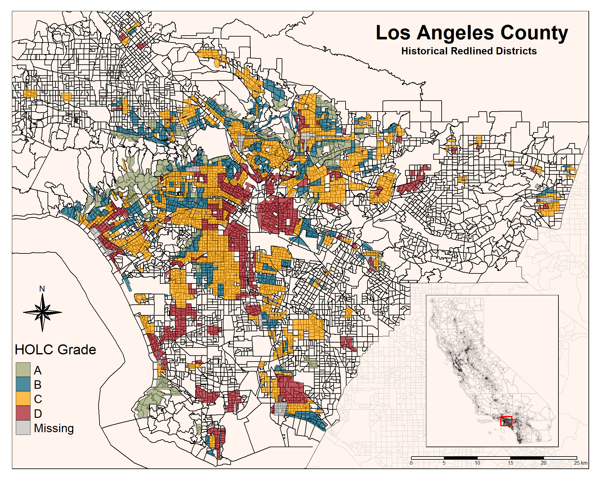
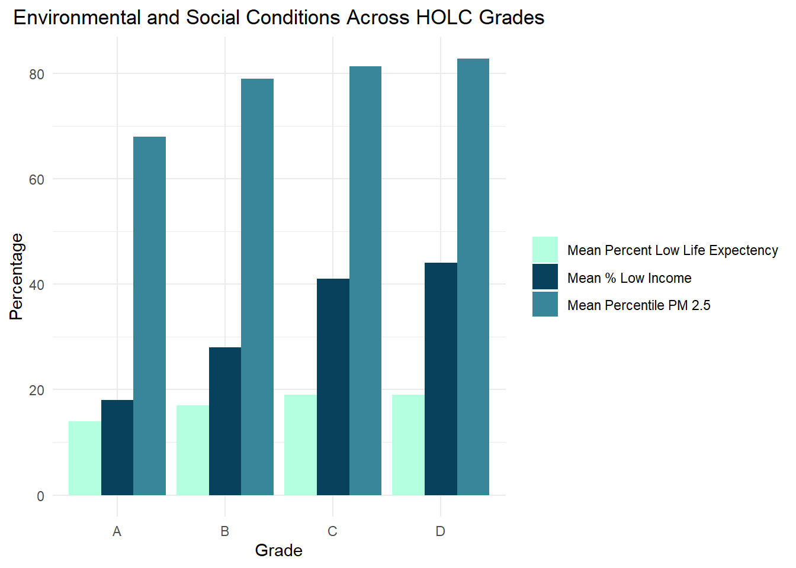

Code
library(sf)
library(tidyverse)
library(tmap)
library(stars)
library(kableExtra)
library(here)
library(dplyr)
library(tidyr)Exploring patterns of environmental justice
library(sf)
library(tidyverse)
library(tmap)
library(stars)
library(kableExtra)
library(here)
library(dplyr)
library(tidyr)# Read in data with here
la_red <- st_read(here::here("data", "mapping-inequality", "mapping-inequality-los-angeles.json")) %>%
st_make_valid()Reading layer `mapping-inequality-los-angeles' from data source
`C:\Users\llumj\OneDrive\Documents\Meds\EDS_223\hw2-llumj\data\mapping-inequality\mapping-inequality-los-angeles.json'
using driver `GeoJSON'
Simple feature collection with 417 features and 14 fields
Geometry type: MULTIPOLYGON
Dimension: XY
Bounding box: xmin: -118.6104 ymin: 33.70563 xmax: -117.7028 ymax: 34.30388
Geodetic CRS: WGS 84# Read in bird biodiversity data
birds <- st_read(here::here("data", "gbif-birds-LA", "gbif-birds-LA.shp"))Reading layer `gbif-birds-LA' from data source
`C:\Users\llumj\OneDrive\Documents\Meds\EDS_223\hw2-llumj\data\gbif-birds-LA\gbif-birds-LA.shp'
using driver `ESRI Shapefile'
Simple feature collection with 1288865 features and 1 field
Geometry type: POINT
Dimension: XY
Bounding box: xmin: -118.6099 ymin: 33.70563 xmax: -117.7028 ymax: 34.30385
Geodetic CRS: WGS 84# Read in ejscreen data
ejscreen <- st_read(here::here("data", "ejscreen", "EJSCREEN_2023_BG_StatePct_with_AS_CNMI_GU_VI.gdb"))Reading layer `EJSCREEN_StatePctiles_with_AS_CNMI_GU_VI' from data source
`C:\Users\llumj\OneDrive\Documents\Meds\EDS_223\hw2-llumj\data\ejscreen\EJSCREEN_2023_BG_StatePct_with_AS_CNMI_GU_VI.gdb'
using driver `OpenFileGDB'
Simple feature collection with 243021 features and 223 fields
Geometry type: MULTIPOLYGON
Dimension: XY
Bounding box: xmin: -19951910 ymin: -1617130 xmax: 16259830 ymax: 11554350
Projected CRS: WGS 84 / Pseudo-Mercator# Use st_crs to check coordinate systems
st_crs(birds) == st_crs(la_red)
st_crs(la_red) == st_crs(ejscreen)
st_crs(ejscreen) == st_crs(birds)ejscreen <- st_transform(ejscreen, crs = st_crs(la_red))# Use st_crs to check coordinate systems
st_crs(birds) == st_crs(la_red)
st_crs(la_red) == st_crs(ejscreen)
st_crs(ejscreen) == st_crs(birds)# Use filter to filter data for LA, Orange, and San Bernardino Counties
los_ang_county <- ejscreen %>%
filter(CNTY_NAME == "Los Angeles County")
orange_county <- ejscreen %>%
filter(CNTY_NAME == "Orange County")
san_bern_county <- ejscreen %>%
filter(CNTY_NAME == "San Bernardino County")# Use tmap package to make holc map
holc_map_la <- tm_shape(los_ang_county, bbox = la_red) +
tm_polygons(col = "white") +
tm_shape(la_red) +
tm_polygons("grade", palette = c("#B3E4FF", "#02B0C0","#FDE996","#FE9F6C"), title = "HOLC Grade") +
tm_shape(san_bern_county) +
tm_polygons(col = "white") +
tm_shape(orange_county) +
tm_polygons(col = "white") +
tm_layout(
title = "HOLC Grades Within LA County",
title.fontfamily = "serif",
title.fontface = "bold",
title.position = c(.61, .95),
legend.title.size = .9,
legend.text.size = .4,
legend.position = c(".05", "05"),
legend.bg.color = NA,
legend.bg.alpha = .7,
bg.color = "white")
print(holc_map_la)
# Calculate the percent of census block groups within each HOLC grade
summary_holc <- la_red %>%
group_by(grade) %>%
summarise(count = n()) %>%
mutate(percent = round((count / sum(count)) * 100, 2)) %>%
st_drop_geometry()
# Create the table with kableExtra
knitr::kable(summary_holc,
col.names = c("HOLC Grade", "Count", "Percent (%)"),
format = "markdown",
caption = "Percentage of Current Census Block Groups Within HOLC Grade")| HOLC Grade | Count | Percent (%) |
|---|---|---|
| A | 57 | 13.67 |
| B | 121 | 29.02 |
| C | 167 | 40.05 |
| D | 71 | 17.03 |
| NA | 1 | 0.24 |
# Spatial join data
joined_data <- st_join(los_ang_county, la_red, join = st_within)
# Filter, Select and summarize columns for mean. Group by grade
holc_mean_filter <- joined_data %>%
filter(!is.na(grade)) %>%
select(LOWINCPCT, D5_PM25, LIFEEXPPCT, grade) %>%
group_by(grade) %>%
summarise(across(c(LOWINCPCT, D5_PM25, LIFEEXPPCT),
list(mean = ~ round(mean(.x, na.rm = TRUE), 2)),
.names = "mean_{col}")) %>%
mutate(mean_LOWINCPCT = mean_LOWINCPCT * 100) %>%
mutate(mean_LIFEEXPPCT = mean_LIFEEXPPCT * 100) %>%
st_drop_geometry()# Gather data into long format
long_data_holc_mean <- holc_mean_filter %>%
pivot_longer(cols = c(mean_LOWINCPCT, mean_D5_PM25, mean_LIFEEXPPCT), names_to = "variable", values_to = "value")
# Create the bar graph
holc_map_mean <- ggplot(long_data_holc_mean, aes(x = grade, y = value, fill = variable)) +
geom_bar(stat = "identity", position = "dodge") +
scale_fill_manual(
values = c("mean_D5_PM25" = "#388697", "mean_LOWINCPCT" = "#08415C", "mean_LIFEEXPPCT" = "#B5FFE1"),
labels = c("mean_D5_PM25" = "Mean Percent PM 2.5", "mean_LIFEEXPPCT" = "Mean Percent Low Life Expectency", "mean_LOWINCPCT" = "Mean % Low Income")) +
labs(title = "Environmental and Social Conditions Across HOLC Grades", x = "Grade", y = "Percentage") +
theme_minimal() +
theme(legend.title = element_blank())
# Print
print(holc_map_mean)
# Create mean table with kableExtra
kable(holc_mean_filter,
caption = "Environmental and Social Conditions Across HOLC Grades",
col.names = c("Grade", "Mean % Low Income", "Mean Percent PM25", "Mean Percent Low Life Expectency"),
format = "markdown") | Grade | Mean % Low Income | Mean Percent PM25 | Mean Percent Low Life Expectency |
|---|---|---|---|
| A | 18 | 7.70 | 14 |
| B | 28 | 13.00 | 17 |
| C | 41 | 19.04 | 19 |
| D | 44 | 21.16 | 19 |
The table shows each Grades A-D, a rating system ranked from best to poorest based on their perceived safety for real estate investment. The table shows a clear connection between the three means we selected. As the grade decreases from A to D, the mean percentage of low income, percentile of PM 2.5, percent of the population with a low life expectancy all go up. This shows that neighborhoods in the D sections, almost always occupied by minorities, suffered in all of these categories due to redlining.